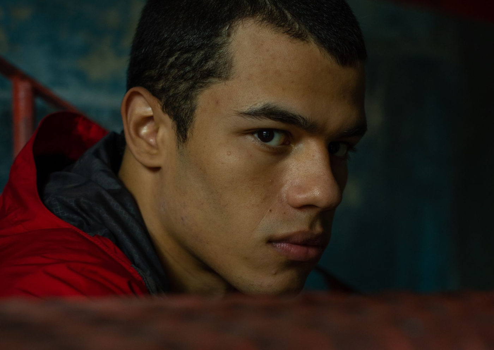

“Baby” Estreia nos Cinemas Brasileiros em 9 de Janeiro Após Conquistar Mais de 25 Prêmios

Após uma trajetória vitoriosa em festivais nacionais e internacionais, o aguardado longa “Baby”, de Marcelo Caetano, estreia nos cinemas brasileiros no dia 9 de janeiro de 2025.
Com mais de 25 prêmios, incluindo reconhecimento em Cannes e festivais como Lima, San Sebastián e Festival Mix Brasil, o filme promete emocionar o público com sua narrativa única e potente.
Sobre o Filme
“Baby” é um retrato sensível e envolvente que transita pelo universo das relações e da busca por identidade e pertencimento. Com um elenco talentoso, o longa já rendeu ao ator Ricardo Teodoro o prêmio de Melhor Ator Revelação na Semana da Crítica de Cannes e uma série de outras premiações ao lado de João Pedro Mariano, outro destaque do elenco.
Premiações e Reconhecimento
Cannes 2024: Melhor Ator Revelação (Ricardo Teodoro)
Festival de Lima: Melhor Filme LGBTQIA+ e Melhor Atuação (Ricardo Teodoro)
Festival de San Sebastián: Sebastiane Latino (Melhor Filme Queer Latino)
Festival Mix Brasil: Coelho de Prata de Melhor Direção (Marcelo Caetano) e Melhor Interpretação (João Pedro Mariano)
Festival do Rio: Melhor Filme (Troféu Redentor), Melhor Ator (João Pedro Mariano), Melhor Direção de Arte (Thales Junqueira), Prêmio Especial do Júri
Festival de Havana: Menção Especial do Júri
Fest Aruanda: Seis prêmios, incluindo Melhor Ator e Melhor Roteiro
Depoimento do Diretor Marcelo Caetano
“O reconhecimento de ‘Baby’ nos festivais internacionais mostra a força do cinema brasileiro, em especial do nosso cinema queer. Estrear no Brasil, onde o filme foi recebido com tanto carinho, é uma emoção única. Valeu a pena cada ano de dedicação.”
Sessões Especiais com Debate
São Paulo
Data: 07/01
Horário: 20h
Local: Cine Sesc
Atividades: Sorteio de camisetas e debate com Marcelo Caetano e Federico Devito, mediado por Rodrigo Garace
Ingressos: Disponível no site do Sesc SP
Porto Alegre
Data: 08/01
Horário: 19h15
Local: Cinemateca Paulo Amorim
Debate: Mediado por Marcus Melo
Reservas: Pelo telefone (51) 3136.5233 ou DM para @cinematecapauloamorim
Salvador
Data: 09/01
Horário: 20h10
Local: Cine Glauber Rocha
Debate: Mediado por Letícia Santinon
Ingressos: Disponível aqui
Rio de Janeiro
Data: 10/01
Local: Cinesystem Botafogo
Debate: Mediado por Anita Rocha da Silveira
Ingressos: Disponíveis em breve
Brasília
Data: 11/01
Horário: 19h
Local: Cine Brasília
Debate: Mediado por Lila Foster
Ingressos: Disponível no Ingresso.com
Não Perca!
“Baby” estreia oficialmente no circuito comercial em 9 de janeiro de 2025, trazendo às telonas uma narrativa marcante e premiada que reflete a potência do cinema brasileiro contemporâneo. Garanta seu ingresso e aproveite para conhecer os bastidores e reflexões do diretor nas sessões especiais com debates.